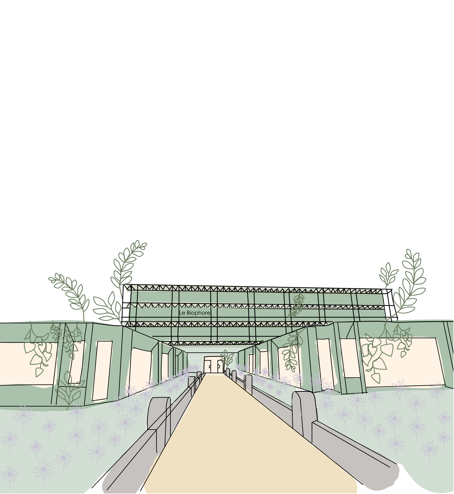

Home
Info
Register
Program
Greener Biophore
5th of June 2025 - Biophore
Conversation on sustainable research
Main Report
Download Main Report
Annexes
Annex 1 – Technical fliers (PDF)
Annex 2 – Fact-checking document (Word)
Annex 3 – Raw data and processed data (ZIP)
Annex 4 – Transition Acceleration Fund request (PDF)
Annex 5 – Slides from invited speakers (PDF)
Annex 6 – Briefing for facilitators (Word)
Annex 7 – Personal flier (PDF)
Annex 8 – Iceberg template (PDF)
Annex 9 – Outcomes of the workshop personal part (Word)
Annex 10 – Outcomes of the workshop technical part (Word)
Annex 11 – Collection of revised propositions (Word)
Annex 12 – Summary for Department Directors (PDF)
Annex 13 – Summary for Department Members (PDF)
Annex 14 – Summary for Dicastery & CCD (PDF)
Make Biophore greener
